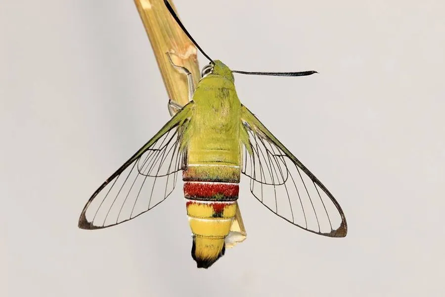

昆虫 · 动物界
咖啡透翅天蛾 Cephonodes hylas

翅膀大部分透明、外形像蜂类的大型天蛾，白天活动，悬停吸蜜，幼虫取食咖啡和栀子等植物叶片。
- 分类
- 门节肢动物门纲昆虫纲目鳞翅目科天蛾科属透翅天蛾属
- 栖息环境
- 热带、亚热带林缘、花园与咖啡园，茜草科植物附近
- 地理分布
- 中国南方、日本、东南亚和印度等地
- 保护级别
- 暂无评估
物种志
咖啡透翅天蛾翅展约 5–6 cm，身体粗壮，腹部有黄黑相间的环带，外形很像一只大蜂；翅膀大部分区域透明，只保留黑褐色的翅脉和边缘，因此得名透翅天蛾。触角黑色，复眼大，飞行时发出明显的嗡嗡声。
它生活在热带和亚热带地区，白天活动，常在花丛间悬停吸蜜，飞行姿态像蜂鸟，靠透明翅膀和模拟蜂类的体色躲避天敌。雌蛾把卵产在咖啡、栀子、钩藤等茜草科植物的叶片上，幼虫取食叶片，体色绿色或褐色，尾端有角突。咖啡透翅天蛾分布于中国南方、日本、东南亚和印度等地，一年发生多代，以蛹越冬。它是咖啡园中的次要害虫，但在自然状态下数量受天敌控制，通常不需要专门防治。
形态与习性
- 食性幼虫取食咖啡、栀子等茜草科叶片；成虫吸蜜
- 翅展约 5–6 cm
- 识别翅膀大部分透明，腹部有黄黑环带，似蜂类
- 习性白天活动，悬停吸蜜，飞行声明显
- 分布中国南方、日本、东南亚和印度
趣味知识
- 咖啡透翅天蛾的翅膀大部分透明，飞起来像一只大蜜蜂。
- 它白天悬停在花前吸蜜，姿态很像蜂鸟。
- 幼虫取食咖啡和栀子叶片，是咖啡园的次要害虫。